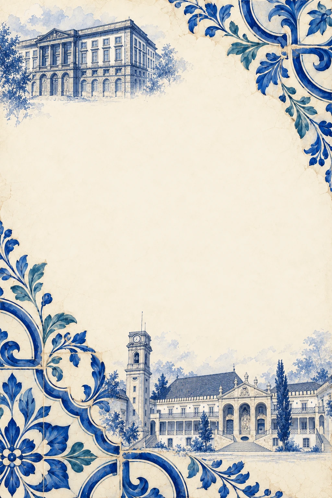
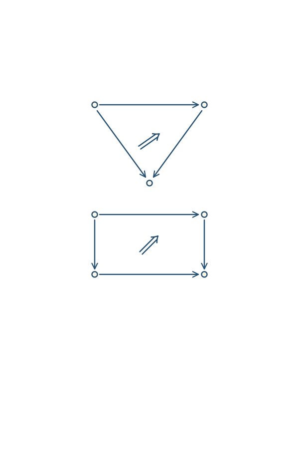
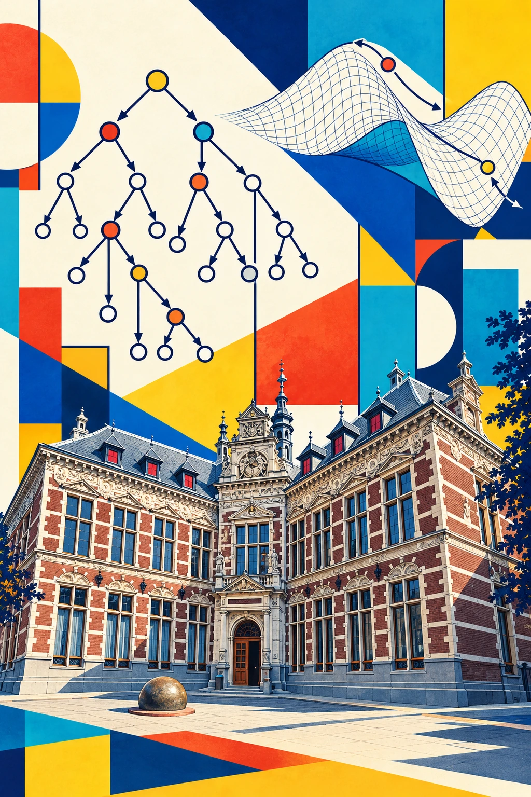

Doctorates
Mathematics and computer science.


Mathematics2018
Pseudomonads and Descent
University of Coimbra
Joint Ph.D. Programme in Mathematics (Coimbra–Porto)
Defended24 January 2018
SupervisorMaria Manuel Clementino
DistinctionSumma cum laude
“Categorical structures through the lenses of one- and two-dimensional monad theory.”
Explore the doctorate
Computer Science2026
Freely Generated Categorical Structures and Automatic Differentiation
Utrecht University
Department of Information and Computing Sciences
Defended28 September 2026
SupervisorsGabriele Keller and Matthijs Vákár
“Theory and practice in computer science should inform one another.”
Explore the doctorate